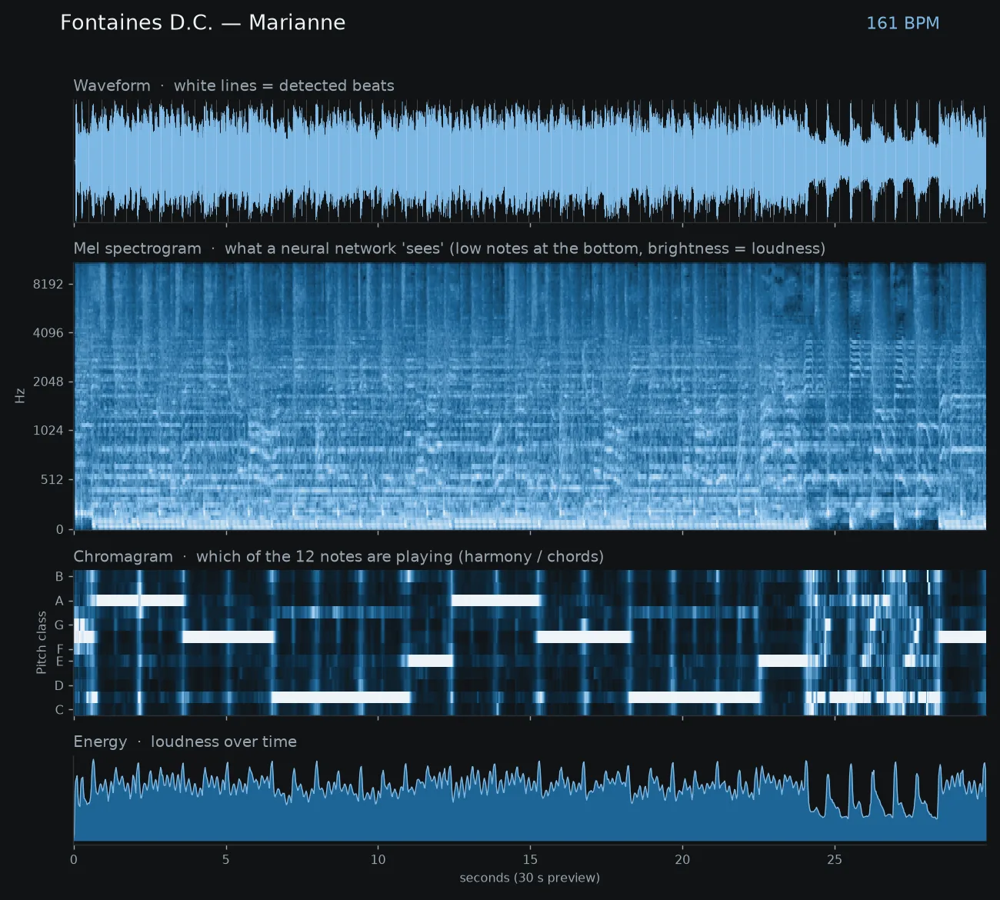

Taste galaxy
Each song becomes 1,280 numbers that describe its sound. UMAP squeezes them onto a flat map where songs that sound alike end up as neighbours. The axes have no fixed meaning; only the distances do.
Nobody told the model about genres, yet it found its own directions: left to right goes from acoustic to electronic, top to bottom from guitars to beats. Latin music forms its own islands, and Funk/Soul splits into classic soul near rock and modern R&B near hip hop.
Legend: click a genre to hide it, double-click to show only that genre, double-click again to bring all back. Drag a box to zoom in, double-click an empty spot to zoom back out.
Discogs-EffNet embeddings → UMAP (cosine, 20 neighbours). "Sounds like" uses the full 1,280-number embeddings, not the flat map.
My taste clusters
K-Means groups songs whose sound fingerprints sit close together. I tried every number of clusters from 2 to 20 and kept the one that is both well separated and reproducible. The names come from what is distinctive in each group: its Last.fm tags, Discogs styles and moods.
Loading…
Discogs-EffNet embeddings → L2-normalised → PCA (90% of variance) → K-Means (k-means++, 20 restarts)
Does a second model hear the same clusters?
CLAP is a completely different model: trained on audio paired with text descriptions instead of Discogs genre labels. I ran it through exactly the same pipeline and compared its 7 clusters with mine. Each row shows where the songs of one of my clusters end up in CLAP's clusters.
Loading…
Emotion map
Every song placed by valence (sad → happy) and arousal (calm → intense) on a 1–9 scale.
My library forms a diagonal band: calm songs lean melancholic, intense songs lean happy. My average lands almost exactly in the middle. The tense corner is mostly hip hop; the sad, tired corner is folk and acoustic.
Essentia emoMusic (MusiCNN) · rings = my top-5 songs in any Spotify period · ★ = library average
Sound explorer
Pick any two (or three) features and see how my songs spread out. Each dot is a song, coloured by genre. Switch to 3D to add a third axis, then drag to rotate.
Loading…
Below the chart: how the same link behaves inside each genre, and the ten strongest links between any two features. Correlation r goes from −1 (one rises as the other falls, orange) to +1 (they rise together, blue); 0 means no link. Tap a pair in the top 10 to plot it.
Tempo: Essentia RhythmExtractor2013 · energy and happiness: emoMusic, 1–9 scale · the other features: Essentia classifiers, % probability
Then vs. now
Lately I play more electronic music, and more relaxed and danceable songs. Acoustic and happy songs dropped compared with the library as a whole.
Essentia mood classifiers · average probability per song · recent = my top 50 of the last four weeks
Key wheel
The key of every song on the circle of fifths, where neighbouring keys sound related. Each slot pairs a major key with its relative minor, such as C major and A minor.
C major and A minor lead, and my music leans to the guitar-friendly sharp side (G, D, A, E). Flat keys like E♭, A♭ and D♭ are rare.
Essentia KeyExtractor
Tempo by genre
Rock is my fastest genre, with a median around 120 BPM. Latin is the slowest, with a peak near 90 BPM, the typical reggaeton groove. Hip hop is spread across the whole range.
Essentia RhythmExtractor2013 · grey = whole library · detectors sometimes report half or double the felt tempo
What's playing
Drums and bass lead, then guitars. My favourite songs carry more synthesizer and less piano and acoustic guitar than the library overall, which matches the move to electronic music.
MTG-Jamendo instrument model, 40 instruments · favourites = top 50 in any Spotify period
My music through time
Release years peak in 2017–2019. I've added Liked Songs steadily since late 2018; the busiest month was October 2023.
Spotify release dates and Liked Songs timestamps
Where my music comes from
Each country is coloured by how many of my songs come from artists born or formed there. Hover a country to see who they are.
Loading…
MusicBrainz (matched through each song's ISRC code), with Last.fm tags as a fallback
Song card: Marianne
The raw signal behind one of my most played songs, by Fontaines D.C., at 161 BPM. From top to bottom: the waveform with detected beats, the mel spectrogram (the picture the neural networks actually "see"), the chromagram (which of the 12 notes are sounding) and loudness over time.
You can read the chord changes as yellow blocks in the chromagram, and the breakdown after 24 seconds in all four panels at once.
librosa · 30 s Deezer preview

Still in the studio
- A recommender with rangeBroad candidates, a small neural taste model, and ranking that rewards novelty.
- The people behind the musicProducers, engineers and session musicians from Discogs and MusicBrainz credits.
- Listening over timeCalendar heatmaps and forgotten favourites from my full Spotify history.